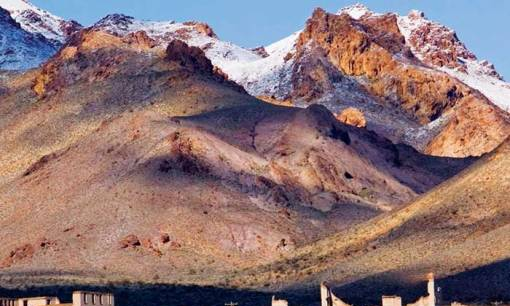

- Главная /
- Туразметки /
- Аризона – необъятная жаркая пустыня США!
Аризона – необъятная жаркая пустыня США!
Дорожные путешествия по Америке обожают все – на красоты штатов и туристы, и американцы готовы смотреть бесконечно. Аризона собрала потрясающие достопримечательности в трёх измерениях. В жаркой пустыне, в зелёном хвойном лесу и в горах со снежными шапками.
Около 50 тысяч (!) лет назад из космоса в Аризону врезался метеорит, образовав аризонский кратер! На скорости 60 тысяч (!) км/ч он встретился с Землёй и образовал воронку, дно которой вмещает 20 футбольных полей.
Если представить трибуны и мысленно разместить сиденья, то это вполне себе стадион на два миллиона человек! Гигантская земляная чаша имеет диаметр 1219 метров, глубину 229 метров. Край кратера поднимается над равниной на 46 метров. Посетите это место! Большой метеоритный кратер в Аризоне, в 30 км к западу от города Уинслоу и 69 км к востоку от города
Около 50 тысяч (!) лет назад из космоса в Аризону врезался метеорит, образовав аризонский кратер! На скорости 60 тысяч (!) км/ч он встретился с Землёй и образовал воронку, дно которой вмещает 20 футбольных полей.
Если представить трибуны и мысленно разместить сиденья, то это вполне себе стадион на два миллиона человек! Гигантская земляная чаша имеет диаметр 1219 метров, глубину 229 метров. Край кратера поднимается над равниной на 46 метров. Посетите это место! Большой метеоритный кратер в Аризоне, в 30 км к западу от города Уинслоу и 69 км к востоку от города

Флагстафф.

После того, как вы почувствуете себя астронавтом, исследуя аризонский метеорит, отправляйтесь на горнолыжный курорт «Сноубол». Он расположен на вершинах горного хребта Сан-Франциско в северной Аризоне, в 11 км к северу от г. Флагстафф. Горнолыжная зона занимает примерно 1% от территории горного хребта. Склоны обращены на запад и северо-запад.
В Аризоне больше парков и национальных памятников, чем в любом другом штате. Больше гор, чем в Швейцарии и больше полей для гольфа, чем в Шотландии.
Один из самых больших каньонов мира располагается в Аризоне. Это целая страна трещин, разломов, скал и речных долин. Восьмое чудо света сотворила скромная речушка «Колорадо», которая шесть миллионов лет вытачивала её из скал. Гранд-Каньон внесён в список Всемирного наследия ЮНЕСКО.
Первые поселенцы, обнаружившие Аризону, и подумать не могли, что это произведение самой природы!
Первые поселенцы, обнаружившие Аризону, и подумать не могли, что это произведение самой природы!